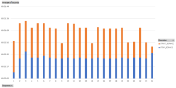

|
|
This was first published on https://blog.dbi-services.com/adwc-startstop-with-psm-command-line-interface (2018-05-02)
Republishing for new followers. The content is related to the the versions available at the publication date
In the previous post, I explained how to create an Autonomous Data Warehouse with PSM (PaaS Service Manager Command Line Interface). The most common operation you want to do with it is starting and stopping the service. This is the best way to save credits for hourly billed services. And PSM is the easiest: run from everywhere (it is Python 3) and no need to provide credentials each time. In the previous post, I explained how to setup PSM for the ADWC service.
Unfortunately, for starting and stopping the instance you may realize that:
The documentation is there, but no mention of start-service, stop-service nor restart-service: https://docs.oracle.com/en/cloud/paas/autonomous-data-warehouse-cloud/user/adwc-commands.html
The online help has start/stop/restart-service:
$ psm adwc h
DESCRIPTION
Oracle Autonomous Data Warehouse Cloud
SYNOPSIS
psm ADWC [parameters]
AVAILABLE COMMANDS
o services
List all Autonomous Data Warehouse Cloud instances
o service
List Autonomous Data Warehouse Cloud instance
o create-service
Provision Autonomous Data Warehouse
o delete-service
Unprovision Autonomous Data Warehouse
o scale-service
Scale Autonomous Data Warehouse
o start-service
This operation will set the operational state of service as started
o stop-service
This operation will set the operational state of service as stopped
o restart-service
This operation will set the operational state of service as after...
o view-backups
List all backups of Autonomous Data Warehouse Cloud instance
o view-backup
List a backup of Autonomous Data Warehouse Cloud instance
o backup
Backup Autonomous Data Warehouse
o view-restores
List all restore operations for Autonomous Data Warehouse Cloud instance
o view-restore
List a specified restore operation for Autonomous Data Warehouse Cloud...
o restore
Restore Autonomous Data Warehouse
o check-health
Health Check operation
o operation-status
View status of Autonomous Data Warehouse Cloud instance operation
o activities
View activities for Autonomous Data Warehouse Cloud instance
o help
Show help
All 3 take the same parameters, the service name, the REST API output format, and a boolean for wait of the completion of the job:
$ psm adwc start-service h
DESCRIPTION
This operation will set the operational state of service as started
SYNOPSIS
psm ADWC start-service [parameters]
-s, --service-name
[-of, --output-format ]
[-wc, --wait-until-complete ]
AVAILABLE PARAMETERS
-s, --service-name (string)
Name of the Autonomous Data Warehouse Cloud instance
-of, --output-format (string)
Desired output format. Valid values are [short, json, html]
-wc, --wait-until-complete (boolean)
Wait until the command is complete. Valid values are [true, false]. Default is
'false'.
EXAMPLES
psm ADWC start-service -s ExampleInstance
So, the online help show it and I try it:
$ psm adwc start-service --service-name ADWC --output-format short -wc true Error: Not Found. <!DOCTYPE HTML PUBLIC "-//W3C//DTD HTML 4.0 Draft//EN"> <HTML> <HEAD> <TITLE>Error 404--Not Found</TITLE> </HEAD> <BODY bgcolor="white"> <FONT FACE=Helvetica><BR CLEAR=all> <TABLE border=0 cellspacing=5><TR><TD><BR CLEAR=all> <FONT FACE="Helvetica" COLOR="black" SIZE="3"><H2>Error 404--Not Found</H2> </FONT></TD></TR> </TABLE> <TABLE border=0 width=100% cellpadding=10><TR><TD VALIGN=top WIDTH=100% BGCOLOR=white><FONT FACE="Courier New"><FONT FACE="Helvetica" SIZE="3"><H3>From RFC 2068 <i>Hypertext Transfer Protocol -- HTTP/1.1</i>:</H3> </FONT><FONT FACE="Helvetica" SIZE="3"><H4>10.4.5 404 Not Found</H4> </FONT><P><FONT FACE="Courier New">The server has not found anything matching the Request-URI. No indication is given of whether the condition is temporary or permanent.</p><p>If the server does not wish to make this information available to the client, the status code 403 (Forbidden) can be used instead. The 410 (Gone) status code SHOULD be used if the server knows, through some internally configurable mechanism, that an old resource is permanently unavailable and has no forwarding address.</FONT></P> </FONT></TD></TR> </TABLE> </BODY> </HTML>
Unfortunately, this doesn’t work. Is it that those commands are not supported yet, reason why we don’t find them in the documentation? Or maybe the opposite: they do not work and rather than fix them, they removed them from the documentation. One thing I’m 100% sure: start-service and stop-service are the most useful commands for a CLI giving easy access to an hourly billed and I want them to work. And it is Python, JSON and HTML – nothing hidden there.
The error message is about no matching URL. PSM metadata is stored in your user directory (~/.psm/data on Linux) with one JSON file for each Oracle platform service. Having a look at the URLs in ADWC.json the bug is obvious:
$ jq . ~/.psm/data/ADWC.json | grep uri
"uri": "/paas/api/v1.1/instancemgmt/{identityDomainId}/services/{serviceType}/instances",
"uri": "/paas/api/v1.1/instancemgmt/{identityDomainId}/services/{serviceType}/instances/{serviceName}",
"uri": "/paas/api/v1.1/instancemgmt/{identityDomainId}/services/{serviceType}/instances",
"uri": "/paas/api/v1.1/instancemgmt/{identityDomainId}/services/{serviceType}/instances/{serviceName}",
"uri": "/paas/api/v1.1/instancemgmt/{identityDomainId}/services/{serviceType}/instances/{serviceName}/scale",
"uri": "/paas/core/api/v1.1/instancemgmt/{identityDomainId}/services/{serviceType}/instances/{serviceName}/start",
"uri": "/paas/core/api/v1.1/instancemgmt/{identityDomainId}/services/{serviceType}/instances/{serviceName}/stop",
"uri": "/paas/core/api/v1.1/instancemgmt/{identityDomainId}/services/{serviceType}/instances/{serviceName}/restart",
"uri": "/paas/api/v1.1/instancemgmt/{identityDomainId}/services/{serviceType}/instances/{serviceName}/backups",
"uri": "/paas/api/v1.1/instancemgmt/{identityDomainId}/services/{serviceType}/instances/{serviceName}/backups/{backupId}",
"uri": "/paas/api/v1.1/instancemgmt/{identityDomainId}/services/{serviceType}/instances/{serviceName}/backups",
"uri": "/paas/api/v1.1/instancemgmt/{identityDomainId}/services/{serviceType}/instances/{serviceName}/restoredbackups",
"uri": "/paas/api/v1.1/instancemgmt/{identityDomainId}/services/{serviceType}/instances/{serviceName}/restoredbackups/{jobId}",
"uri": "/paas/api/v1.1/instancemgmt/{identityDomainId}/services/{serviceType}/instances/{serviceName}/restoredbackups",
"uri": "/paas/api/v1.1/instancemgmt/{identityDomainId}/services/{serviceType}/instances/{serviceName}/healthcheck",
"uri": "/paas/api/v1.1/activitylog/{identityDomainId}/job/{jobId}",
"uri": "/paas/api/v1.1/activitylog/{identityDomainId}/filter",
Let’s remove this ‘/core’ from the uri:
sed -ie 's/core\\[/]//g' ~/.psm/data/ADWC.json
And run again the start-service:
$ psm adwc start-service -s ADWC -wc true Message: Job submitted successfully for start of service/system Job ID: 25617877 Waiting for the job to complete... (it cannot be cancelled)
Here it is.
As my laptop is on Windows where I use Cygwin, I have setup two icons with:
C:\cygwin64\bin\mintty.exe -w min /usr/bin/psm adwc stop-service -s ADWC -wc true C:\cygwin64\bin\mintty.exe -w min /usr/bin/psm adwc start-service -s ADWC -wc true
 This ADWC service is a PDBaaS. Starting and Stopping is as easy as opening and closing a pluggable database. Here are the timestamps after starting and stoppin in a loop (with graph on 24 loops).
The startup time is around 30 seconds. The stop time is about a minute. Really easy to use.
$ psm adwc activities -s ADWC -l 50 Operation Type Status Start Time End Time START_SERVICE SUCCEED 2018-04-29T14:30:36.888+0000 2018-04-29T14:31:21.563+0000 STOP_SERVICE SUCCEED 2018-04-29T14:27:26.551+0000 2018-04-29T14:27:35.610+0000 STOP_SERVICE SUCCEED 2018-04-29T14:25:22.172+0000 2018-04-29T14:25:51.586+0000 START_SERVICE SUCCEED 2018-04-29T14:20:47.957+0000 2018-04-29T14:21:38.131+0000 STOP_SERVICE SUCCEED 2018-04-29T14:08:09.409+0000 2018-04-29T14:08:48.125+0000 START_SERVICE SUCCEED 2018-04-29T14:07:24.892+0000 2018-04-29T14:08:08.244+0000 STOP_SERVICE SUCCEED 2018-04-29T14:04:57.566+0000 2018-04-29T14:05:27.458+0000 START_SERVICE SUCCEED 2018-04-29T14:03:51.035+0000 2018-04-29T14:04:34.108+0000 STOP_SERVICE SUCCEED 2018-04-29T14:03:17.701+0000 2018-04-29T14:03:47.262+0000 START_SERVICE SUCCEED 2018-04-29T14:02:00.944+0000 2018-04-29T14:02:50.978+0000 STOP_SERVICE SUCCEED 2018-04-29T14:00:56.990+0000 2018-04-29T14:01:29.567+0000 START_SERVICE SUCCEED 2018-04-29T13:59:52.898+0000 2018-04-29T14:00:39.373+0000 STOP_SERVICE SUCCEED 2018-04-29T13:59:19.380+0000 2018-04-29T13:59:49.011+0000 START_SERVICE SUCCEED 2018-04-29T13:58:15.594+0000 2018-04-29T13:58:58.937+0000 STOP_SERVICE SUCCEED 2018-04-29T13:57:42.355+0000 2018-04-29T13:58:11.845+0000 ...
Easy command line without having to provide a password interactively, wait for completion, fast operation, this gives a great user experience for this service. The only problem is when you play with several cloud accounts. I’ll show an idea in the next post.
{kind=link}